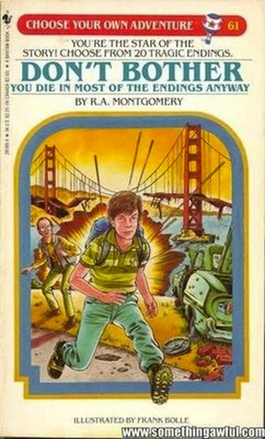

MATT THOMPSON
Why are stories still linear?
Making stories interactive
Entertainment has changed a lot over the last couple of centuries. We went from books and plays to radio, films and TV. A big use of these media was for fiction - telling a story. But although the media changed greatly, the stories were mostly of the same format: totally linear and non-interactive.
Then video games came along. And stories were still linear. Even though the medium had become this exciting, interactive thing, the stories the medium was conveying were still relatively the same.
Turn to page 24 to drink the liquid

Most people are familiar with non-linear narratives from the “Choose Your Own Adventure” series of books that were popular in the 90s. These books would invite the reader to choose the path of the story by giving them a set of options with corresponding page numbers to turn to. A typical scenario would be:
You find yourself on an alien planet.The aliens take you back to their city for a welcoming ceremony. At the climax of the ceremony, the aliens offer you a goblet of some liquid to drink.
To drink the liquid, turn to page 24
To politely decline the offer, turn to page 173
To freak out and run, turn to page 82
When you turn to these pages, you go off on one branch of the story.
The appeal of these books for most kids was that 90% of the choices you make would result in a grisly death, complete with illustrations. This was a result of the limitations of the format — only so many pages in a book means that you can only maintain so many story branches, so naturally most choices have to result in dead ends.
Non-linearity in computer games
A lot of mainstream games claim to have “multiple endings” or “many paths”, but more often than lot the paths through the game are very few and very similar. Multiple endings in games usually means that the player is only really given a choice right near the end of the game that can affect the final few minutes of play. One game that is certainly non-linear is Façade, an interactive story that is the result of a research project by Michael Mateas and Andrew Stern at Georgia Tech.
In Façade, you play the guest at a small dinner party where your hosts are a recently married couple. The conversations and drama emerge from the way in which you interact with the characters.
Interaction takes place by walking around the room, picking up items and typing in messages to say to the characters. What emerges is more-or-less generative dialog that is for the most part entirely coherent and believable. A lot of dialogue seems to have been written for this game, and the effort put in really shows. No two play-throughs are ever the same, and it’s rare that I have even heard the same lines of dialogue twice. Obviously this game is made possible due to its limited scope and setting, but it’s sad that developers aren’t trying to expand beyond this to create non-linear games with more characters and settings. It would be great to have more games that reward the player more and more each time you finish them. This is certainly a promising area for research.